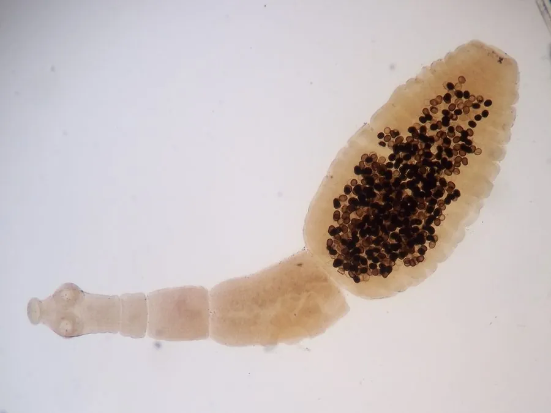

其他无脊椎动物 · 动物界
细粒棘球绦虫 Echinococcus granulosus

成虫只有几毫米、寄生在犬肠道的绦虫，人误食虫卵后幼虫在肝肺长成棘球蚴囊肿，是牧区重要的寄生虫病。
- 分类
- 门扁形动物门纲绦虫纲目圆叶目科带绦虫科属棘球属
- 栖息环境
- 犬科动物的小肠，幼虫在羊、牛和人的肝、肺等器官内形成囊肿
- 地理分布
- 全球牧区，中国新疆、青海、甘肃、宁夏、西藏等地流行
- 保护级别
- 暂无评估
物种志
细粒棘球绦虫成虫只有3–7毫米长，通常由4–5个节片组成，头节上有顶突和一圈小钩，是已知最小的绦虫之一。它的幼虫叫作棘球蚴，是一个充满液体的囊，囊内壁不断长出原头蚴，可以长到数十厘米，挤压周围的组织。
成虫寄生在犬的小肠里，虫卵随犬粪排出，污染草地、水源和犬毛。羊、牛、猪等中间宿主吞食虫卵后，六钩蚴穿出肠壁，随血流到达肝脏和肺脏，慢慢长成棘球蚴；犬吃了含棘球蚴的脏器，又成为终宿主。人误食虫卵同样会得病：接触带虫犬的粪便、被卵污染的土壤、蔬菜和饮水，或抚摸犬后不洗手就进食。棘球蚴病早期无症状，囊肿增大后出现肝区疼痛、咳嗽，一旦破裂可引起过敏性休克。预防要定期给犬驱虫、不喂生内脏、接触犬后洗手，牧区人群应定期做超声筛查。
形态与习性
- 成虫仅3–7毫米长，由4–5个节片组成
- 棘球蚴充满液体的囊肿，内壁不断产生原头蚴
- 终宿主犬、狼等犬科动物
- 中间宿主羊、牛、猪以及人
- 感染途径误食被犬粪中虫卵污染的食物、水或土壤
- 防护定期给犬驱虫、不喂生内脏、接触犬后洗手
- 风险囊肿破裂可引起过敏性休克
趣味知识
- 它是已知最小的绦虫之一，成虫还不到一厘米。
- 犬吃了含棘球蚴的羊肝，就会在肠里长出成虫。
- 人误食虫卵后，肝或肺里会慢慢长出一个囊。